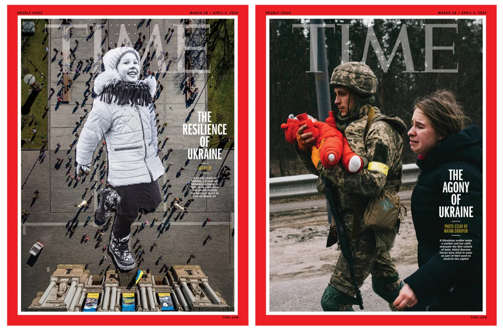
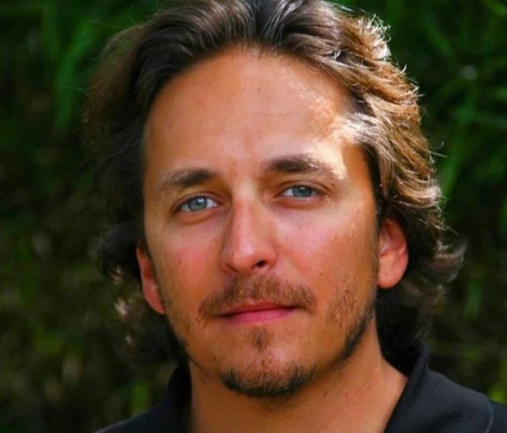

Рассказывая истории войны
Эдвард Фельсенталь @efelsenthal 17 марта 2022 г. Обновлено: 17 марта 2022 г., 7:00
Как рассказать о войне? С тех пор, как 24 февраля началось российское вторжение в Украину, все мы боролись с постоянным потоком изображений и сообщений, поступающих в наши дома и на наши экраны с беспрецедентной непосредственностью. Мир был очарован необычайной стойкостью народа Украины и невыразимыми трагедиями, которые они переживают.
На этой неделе война вернулась к TIME со смертью Брента Рено , отмеченного наградами 50-летнего кинорежиссера, который был убит российским огнем в киевском пригороде Ирпень 13 марта. Брент работал над TIME Документальный фильм Studios о глобальном кризисе беженцев. Этот кризис теперь включает в себя 3 миллиона беженцев, бегущих из Украины. Потеря Брента является разрушительной для журналистики, усугубляемой несколькими днями позже смертью оператора Пьера Закшевского, 55 лет, и украинской журналистки Александры Кувшиновой, 24 лет. Истории о войне были бы невозможны без таких журналистов, как Брент, Пьер, Александра; такие журналисты, как Евгений Сакун и Виктор Дударь, убитые ранее в ходе конфликта; и, как и многие другие в Украине и во всем мире, чья работа необходима в этот критический момент.
Скорбя о потере этих мужественных профессионалов, мы отдаем дань их памяти своей работой. «Что меня больше всего волнует, — говорит брат Брента Крейг в воспоминаниях в этом выпуске , — так это то, как конкретно и искренне люди, чтящие Брента, признают миссию, которая двигала им
Мы рассказываем истории беженцев, столь важную часть работы Брента, в двух обложках, сопровождающих этот выпуск. На одном изображена 5-летняя девочка Валерия. Она родом из родного города президента Владимира Зеленского и вместе с матерью Таисией недавно бежала в Польшу, оставив брата и отца. «Было очень тяжело уезжать из Украины, очень тяжело, — рассказывает Таисия TIME в этом выпуске, — но все хотят заботиться о своих детях». Изображение, созданное художницей JR и сфотографированное с дрона сверху, поднято более чем сотней ее соотечественников на проспекте Свободы во Львове, городе на западе страны, который был центром международной помощи и сотрудничества. последние несколько недель.